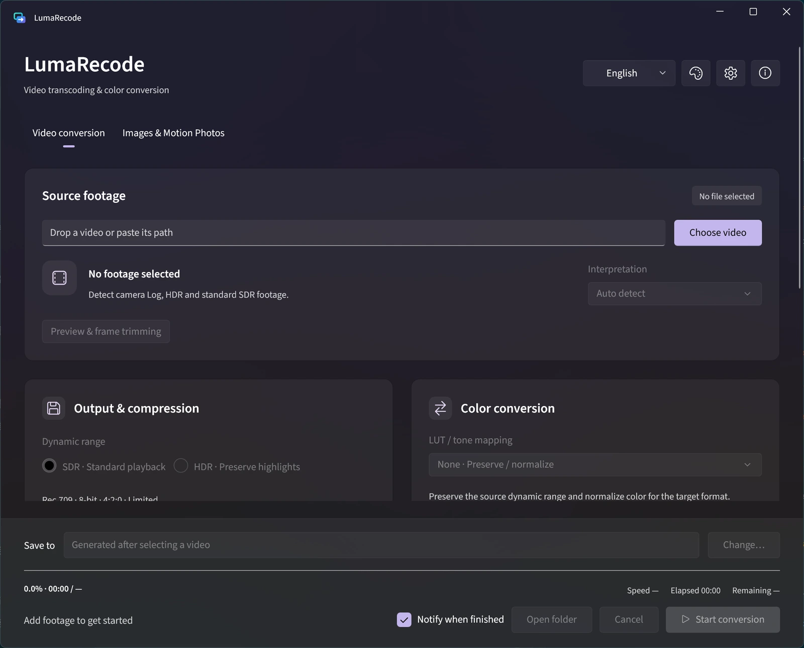

Windows & macOS · Open source
Video conversion
with color in mind.
Convert Log and HDR footage, trim to the frame, and export stills or motion photos from your video.

Keep control of color
Convert camera Log, HLG, or PQ to HDR or SDR. Inspect color and metadata before encoding, or choose a LUT for your source.
Trim by frame
Play or scrub the timeline, step one frame at a time, and set the exact start and end to export.
Share or archive
Use an available hardware encoder for quick sharing, or choose software encoding for your archive.

Make a photo from any frame.
Export Ultra HDR JPEG or Android Motion Photo on Windows. On macOS, save HDR HEIC, Adaptive HDR HEIC, and Apple Live Photos.
Read the platform guideDownload LumaRecode
- Windows 11 · x64 or ARM64
- Native AOT portable ZIP, single EXE, or MSI, with optional bundled FFmpeg.
- macOS 27 or later · Apple silicon
- Standard DMG or FFmpeg Full DMG with the conversion tools included.